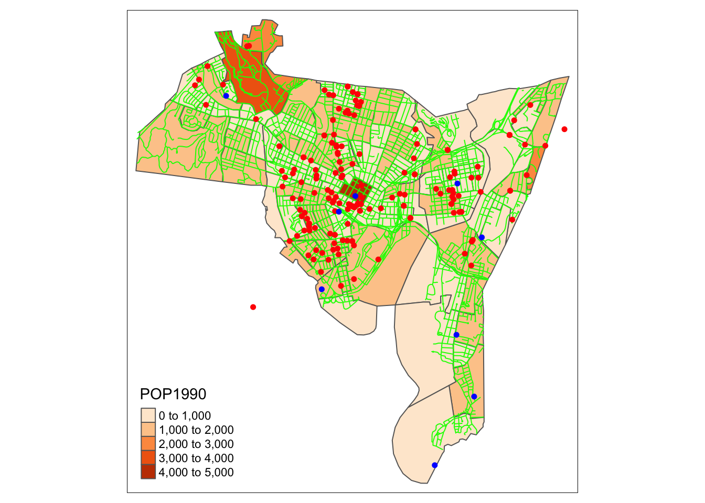
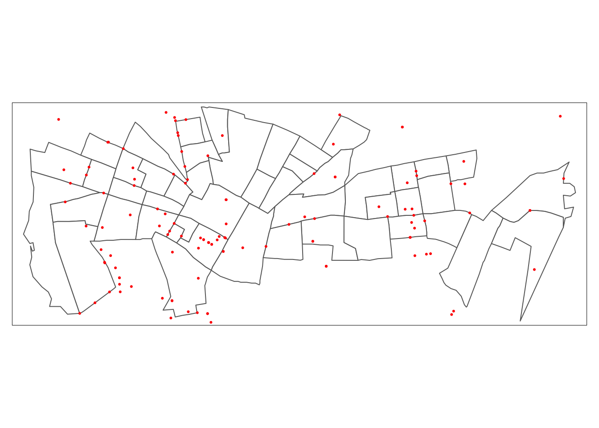
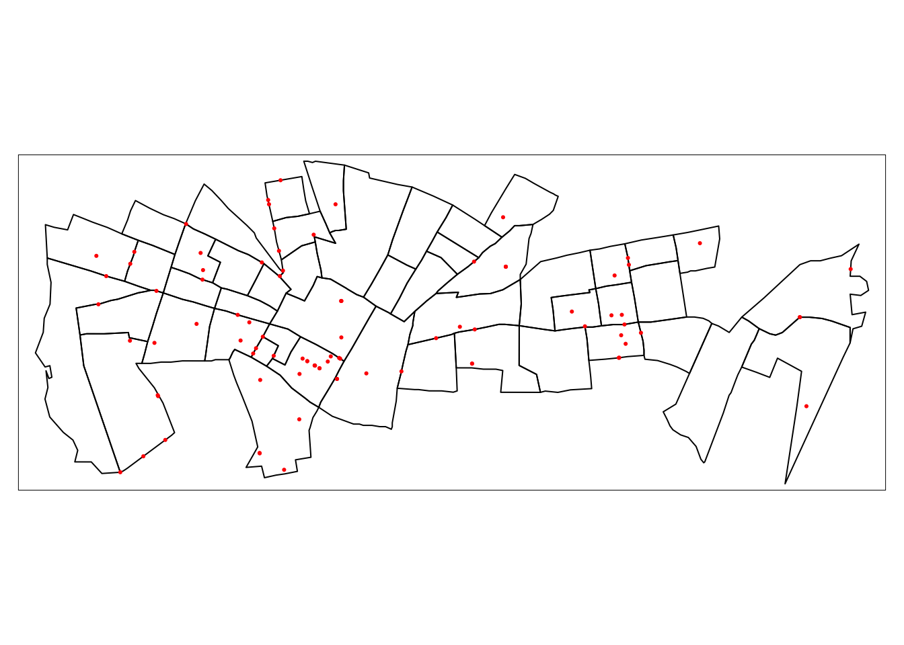
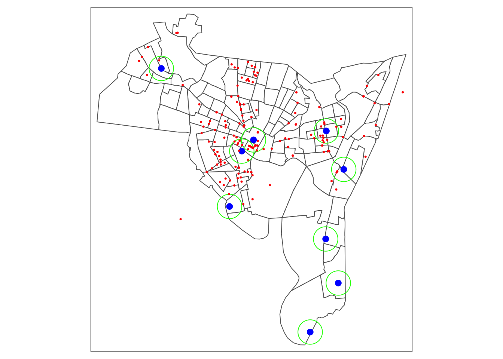
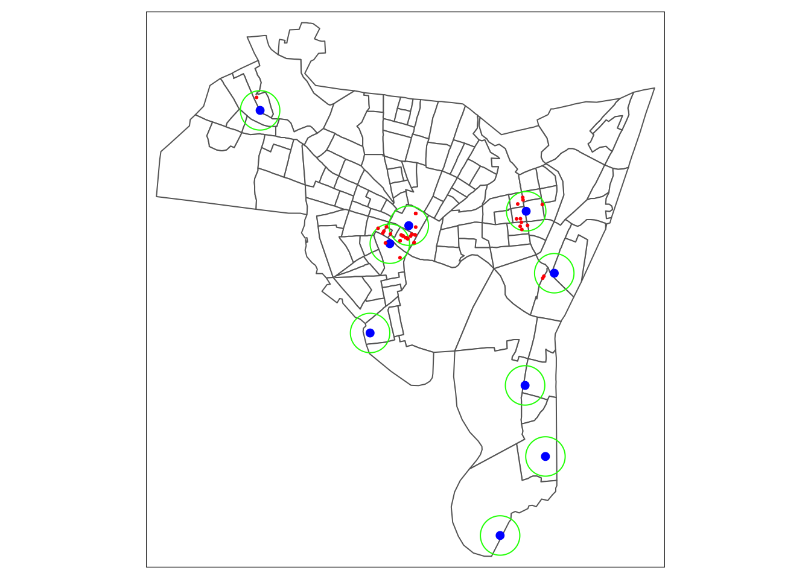
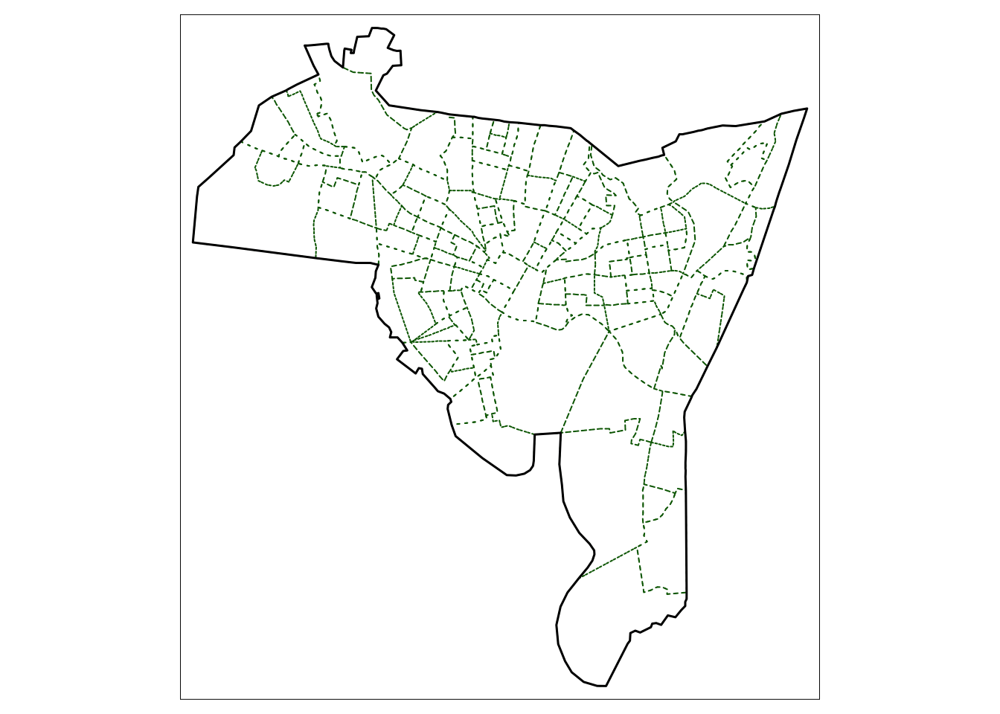
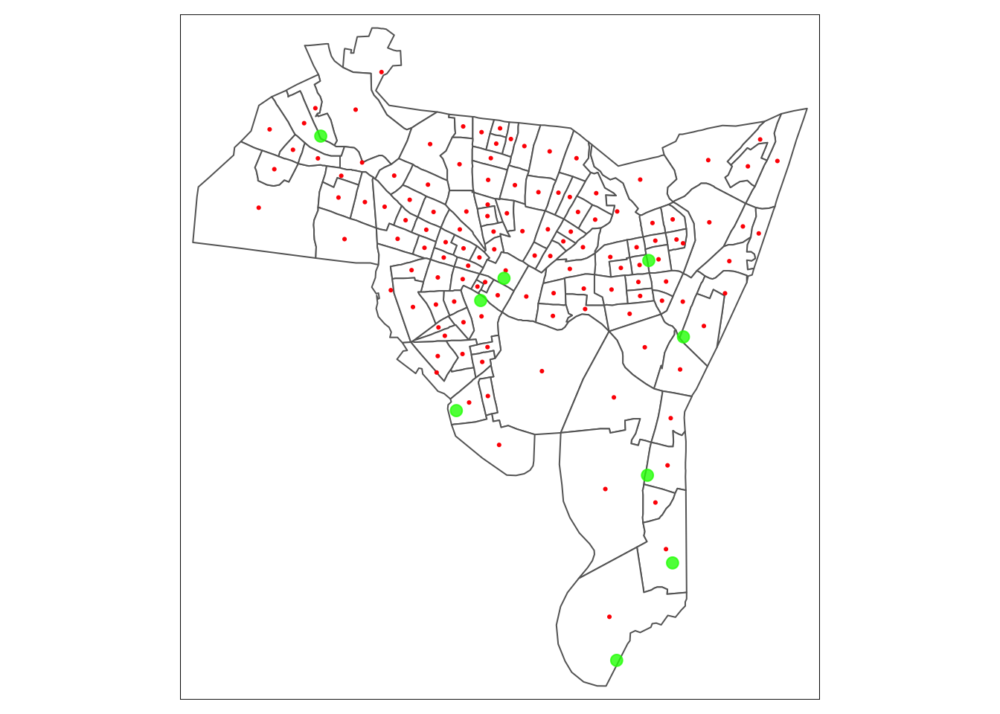
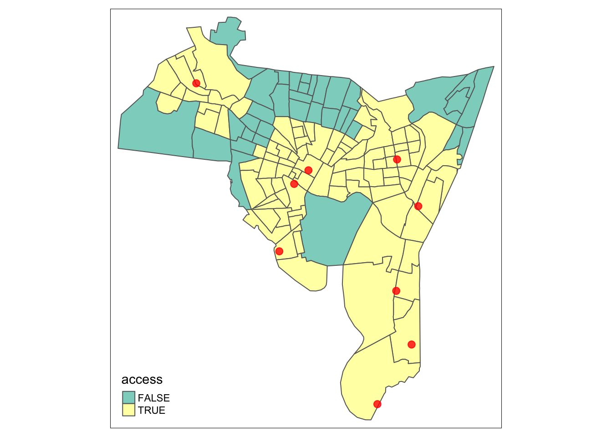

Chapter 4 Basic GIS Operations
Thought box In GIS and spatial analysis, we are often interested in finding out how the information contained in one spatial dataset relates to that contained in another.
- Big Picture Question: Our public health goal is to investigate counts and/or rates of a given health indicator or event within the context of spatial attributes.
- What are some of the questions we may be interested in investigating?
- Trends of rates/counts in specific locations or areas?
- Relationship between outcomes and proximity to thinks in the physical environment.
- Relationships between outcomes and socio-demographic risk factors.
- How many X are there in different locations of Y?
- How many of X are found within a certain distance of Y?
- Can you think of any public health or other research applications where we may want to answer the questions above?
In this chapter we will use examples to illustrate a number of fundamental and commonly applied spatial operations on spatial datasets. Essentially, the operations illustrate different methods for extracting information from one spatial dataset based on the spatial extent of another, referred to overlay operations. The sections below describe the following operations:
- Intersection and clipping one dataset to the extent of another, Section 4.2
- Creating buffers around features 4.3
- Merging the features in a spatial dataset 4.4
- Point-in-polygon and area calculations
- Creating distance attributes
- Combining spatial data and attributes
- Converting between raster and vector
4.1 New Haven Data
In lectures, we will illustrate analysis using data from the [New Haven CT crime web site] containing point sources of some crimes, plus roads, railways, and census block spatial data frames. The New Haven data include:
- blocks: A polygon data set with demographic breakdowns by census blocks within New Haven.
- breach: A point data set with locations of breaches of the peace.
- roads: A lines data set with road spatial features in New Haven.
- places: A point data set with locations of major landmarks in New Haven.
- famdisp: A point data set with locations of family disputes.
The plot below shows an example of the New Haven data, in which we plot population by census block (orange polygons), the breaches of peace (red), landmarks (blue), and roads (green.)

4.2 Spatial Clip and Intersection Operations
What is clipping?
A geographic clip cuts out an input layer to a defined spatial feature boundary. Like a cookie-cutter to a spatial area. The clip and intersect tool achieve the same results. The main difference is that an intersection preserves attributes from both tables.
Consider the situation where the aim is to analyze the incidence of a particular area: we do not want to analyze ALL the data but only those records that describe events in a given study area. In the code below we call in the New Haven data and create \(sf\) data frames for the blocks and breaches data. We then subset to areas in central New haven and subsets the census block data to only include these selected areas.
#Call in the libraries
library(dplyr)
library(GISTools)
library(tmap)
library(sf)
#read in New Haven data and...
#transform the census block and breach data to sf objects
data(newhaven)
blocks_sf <- st_as_sf(blocks)
breach_sf <- st_as_sf(breach)
# Set the indices to subset
indices <- c(46:47,51, 53, 57:100)
# Create a new data set blocks_sf2 that includes only the selected areas
blocks_sf2 <- blocks_sf[indices,]
tm_shape(blocks_sf2) +
tm_polygons(col = "white") +
tm_shape(breach_sf) +
tm_dots(col = "red")
Is this what we want? No. We want to clip the breach data to only include points within our selected areas. There are a number of ways to clip spatial data. The simplest way is to use the spatial boundaries of one as an index to subset another.
However, such clip (or crop) operations simply subset data based on spatial boundaries. There may be applications where you wish to combine attributes of different data sets based on spatial intersection. The \(st\_intersection()\) function allows us to do this, shown below. Here we want to combine the breach and census block data from New Haven. You can see when we combine data sets we obtain a point data frame with census block attributes for each location.
Simple feature collection with 6 features and 28 fields
Geometry type: POINT
Dimension: XY
Bounding box: xmin: 546241.4 ymin: 169623.6 xmax: 558373.1 ymax: 177376.3
Projected CRS: SOURCECRS
NEWH075H_ NEWH075H_I HSE_UNITS OCCUPIED VACANT P_VACANT P_OWNEROCC
98 100 25 375 311 64 17.066667 4.266667
93 95 111 0 0 0 0.000000 0.000000
99 101 27 207 168 39 18.840580 11.111111
83 85 123 461 389 72 15.618221 29.067245
52 54 87 347 328 19 5.475504 2.305476
95 97 51 302 270 32 10.596026 36.092715
P_RENTROCC NEWH075P_ NEWH075P_I POP1990 P_MALES P_FEMALES P_WHITE
98 78.66667 100 528 499 56.91383 43.08617 73.547094
93 0.00000 95 523 0 0.00000 0.00000 0.000000
99 70.04831 101 531 782 53.45269 46.54731 30.306905
83 55.31453 85 511 1277 48.08144 51.91856 48.238058
52 92.21902 54 471 967 42.50259 57.49741 3.102378
95 53.31126 97 525 823 49.33171 50.66829 50.911300
P_BLACK P_AMERI_ES P_ASIAN_PI P_OTHER P_UNDER5 P_5_13 P_14_17
98 14.82966 1.002004 9.018036 1.603206 0.801603 2.605210 0.400802
93 0.00000 0.000000 0.000000 0.000000 0.000000 0.000000 0.000000
99 45.26854 0.255754 0.511509 23.657289 9.335038 15.089514 5.626598
83 23.49256 0.156617 0.234926 27.877839 10.884886 17.306186 6.499608
52 94.20889 0.103413 0.000000 2.585315 14.788004 22.130300 7.032058
95 45.07898 0.243013 0.729040 3.037667 9.599028 8.626974 3.037667
P_18_24 P_25_34 P_35_44 P_45_54 P_55_64 P_65_74 P_75_UP
98 37.47495 30.06012 12.825651 7.615230 4.208417 2.605210 1.402806
93 0.00000 0.00000 0.000000 0.000000 0.000000 0.000000 0.000000
99 10.99744 22.63427 18.414322 7.161125 4.219949 4.731458 1.790281
83 13.31245 17.85435 13.547377 9.162099 5.481597 3.054033 2.897416
52 14.06412 16.95967 8.273009 7.549121 4.446743 3.516029 1.240951
95 12.39368 15.30984 11.664642 7.168894 8.140948 10.692588 13.365735
geometry
98 POINT (551423.1 172304.5)
93 POINT (555168.5 172163.4)
99 POINT (549133.6 169623.6)
83 POINT (558373.1 173223.7)
52 POINT (549729.3 177376.3)
95 POINT (546241.4 171265.2)
4.3 Buffers and Features
What is a Buffer?
A buffer in GIS is a reclassification based on distance: classification of within/without a given proximity. In other words, a buffer in GIS is a defined zone or area created around a geographic feature such as a point, line, or polygon.
The buffer is typically measured in units of distance, such as feet, meters, or kilometers, and represents a specific radius or width around the feature.
In many situations, we are interested in events or features that occur neat to our area of interest as well as those within it. We may be interested in crimes that occur within a certain distance of particular areas or locations. Buffering operations provide a convenient way of doing this, and buffers can be created using the \(st\_buffer()\) function. In the New Haven data, there is a \(places\) data frame that contains major landmarks in New Haven. We can create buffers around the major neighborhoods to define crimes that happen within a certain distance of the neighborhoods.
Setting distance on the buffer: In case dist is a units object, it should be convertible to arc_degree if x has geographic coordinates, and to st_crs(x)$units otherwise.EMILY TO CHECK THIS I THINK BELOW IS 1500m. Pertaining to change projections.
data(newhaven)
breach_sf <- st_as_sf(breach)
places_sf <- st_as_sf(places, coords = c("longitude", "latitude"), crs = "NAD83")
st_crs(places_sf) <- st_crs(breach_sf)
#Create a polygon buffer around the places centroids.
places_sf_buff <- st_buffer(places_sf, dist = 1500)
tm_shape(blocks_sf) +
tm_polygons(col = "white") +
tm_shape(places_sf) +
tm_dots(col = "blue", size = 0.3) +
tm_shape(places_sf_buff) +
tm_borders(col = "green") +
tm_shape(breach_sf) +
tm_dots(col = "red")
Alternatively, if you want to subset data to only include those areas/points that are located within a certain distance of another spatial extent, we can use the\(st\_is\_within\_distance()\) function. Below we want to identify the breaches that occur within 1500m of the neighborhood centroids. We use the above function to define the following: (1) The first input is the points we want to be the centroids, (2) The area/points that lay within a distance, and (3) The distance value.
indices_within_dist <- unlist(st_is_within_distance(places_sf, breach_sf, dist = 1500))
breach_within <- breach_sf[indices_within_dist,]
tm_shape(blocks_sf) +
tm_polygons(col = "white") +
tm_shape(places_sf) +
tm_dots(col = "blue", size = 0.2) +
tm_shape(places_sf_buff) +
tm_borders(col = "green") +
tm_shape(breach_within) +
tm_dots(col = "red")
4.4 Merging Spatial Features
In the intersection example, we selected census blocks within New Haven and used them to define the area of interest. Attributes for the selected census blocks were added to the point data for breaches. In other instances, we may wish to consider the area as a single object and merge all features within it. This can be done using the \(st\_combine()\) function. As an exmaple, what is we wanted to derive the outline of the city of New Haven, we can merge all attributes from the census block data shown below.
## Geometry set for 1 feature
## Geometry type: POLYGON
## Dimension: XY
## Bounding box: xmin: 531731.9 ymin: 147854 xmax: 569625.3 ymax: 188464.6
## Projected CRS: SOURCECRS## POLYGON ((561858.8 152537.1, 561501.4 152099.8,...tm_shape(blocks_sf) +
tm_borders(col = "darkgreen", lty = 3) +
tm_shape(merge_blocks) +
tm_borders(lwd = 1.5, col = "black")
The union operations merge spatial object sub-geometries. Once the merged objects have been created they can be used as inputs into the intersection and buffering procedures in order to select data for analysis. The merged objects can also be used in a cartographic context to provide a border to the study area being considered.
4.5 Point-In-Polygon and Area Calculations
4.5.1 Point-In-Polygon
It is often useful to count the number of points falling within different ones in a polygon datasets. This can be done using the \(poly.counts()\) function in the GISTools package, which extends on the \(st\_contains()\) function. The code below assigns a list of counts of the number of crimes that occur inside each census block using the \(st\_contain()\) function. We use the \(lapply()\) function to count the number crimes in each list element.
crime.count <- rowSums(st_contains(blocks_sf,breach_sf, sparse = F))
blocks_sf$crime.count <- crime.count
blocks_sf$crime.count[1:10] [1] 2 0 2 0 2 0 0 0 3 0These number represent the number of breaches in each census block in each row of the \(blocks\_sf\) data frame.
4.5.2 Area Calculations
Another useful operation is to be able to calculate polygon areas. The \(st\_area()\) function computes the euclidean or great circle distance between pairs of geometries. The results below show the square footage of the first 4 census blocks. Perhaps not a super useful metric to use. We can convert the calculation to square mile using the \(ft2mile()\) function, which converts to 2.8 sq. feet per sq. mile.
4.6 Creating Distance Attributes
Why is distance important?
Distance is fundamental to spatial analysis. Distance measures are used to evaluate differences in accessibility for different social groups.
We may wish to analyze the number of locations or people within certain distances of the spatial features. Distance is approximated using a series of buffers created at specific distance intervals around features. The most common function used is dist(). This calculates Euclidean distance between points.
Let’s calculate the distance between the centroids (midpoints) of New Haven census blocks and the green spaces locations (these could also represent other features, i.e., facility locations, clinics). The locations of green spaces in NH is saved in the places dataset.
#Extract the centroids (midpoints) of the New Haven census blocks.
centroids <- st_centroid(blocks_sf)
#Calculate the distance between the census block midpoints and the place locations.
#notes the use of the ft2miles function to convert to miles
cents_sf <- st_as_sf(centroids)
distances <- ft2miles(st_distance(cents_sf, places_sf))
distances[1:5]Units: [US_survey_foot]
[1] 2.910784 2.666624 2.963935 2.924395 3.175274tm_shape(blocks_sf) +
tm_polygons("white")+
tm_borders("black") +
tm_shape(cents_sf) +
tm_dots("red") +
tm_shape(places_sf) +
tm_dots(col = "green", size = 0.3, alpha = 0.8)  What do we get?
- distances: A 129 by 9 matrix.
- For each block midpoint, the distance (in miles) to the 9 different places.
- Using this matrix, we can provide a measure of the average distance experienced by people living in that area (census block) to get to those places.
4.7 Distance/Accessibility Analysis
The use of distance measures in conjunction with census data is particularly useful for analyzing access to locations or facilities. We may want to examines access to green spaces or hospitals for different social groups. In our current example, we can examine the equity of access to local landmarks recorded in the places location data for different ethnic groups reported in the blocks dataset. We will use the census data to approximate the number of people with and without access of less than 1 mile.
#Create a vector that calculates the minimum distance to green space for each census block
#Use the apply function that does row or column wise calculations, i.e., instead of doing every row separately.
#?apply
min.dist <- as.vector(apply(distances, 1, min))
#Create indicator if there is a green space location within 1 mile (T or F)
blocks_sf$access <- min.dist < 1 #This statement says "is the min distance less than 1, yes or no?"
blocks_sf$access[1:3]## [1] FALSE TRUE TRUELet’s take a look at the data
library(tmap)
# View(blocks_sf)
tm_shape(blocks_sf) +
tm_polygons("access") +
tm_shape(places_sf) +
tm_dots(col = "red", size = 0.3, alpha = 0.8)
The populations of each ethnic group in each census block can be extracted from the blocks dataset:
## P_WHITE P_BLACK P_AMERI_ES P_ASIAN_PI P_OTHER
## 0 7.095159 87.02003 0.584307 0.041736 5.258765
## 1 87.105177 10.45262 0.195376 0.521003 1.725822
## 2 32.931727 66.26506 0.100402 0.200803 0.502008#Create a matrix of proportions of each ethnic group
ethnicity <- as.matrix(data.frame(blocks[,14:18])/100)[,1:5]
# Multiple proportion by the population to get the number within each group using colimn-wise apply() function.
ethnicity <- apply(ethnicity, 2, function(x)(x * blocks_sf$POP1990))
#Create a matrix of counts by group
ethnicity <- data.frame(matrix(as.integer(ethnicity), ncol = 5))
colnames(ethnicity) <- c("White", "Black",
"Native American", "Asian", "Other")
ethnicity$access <- blocks$access
head(ethnicity)## White Black Native American Asian Other
## 1 170 2084 13 0 126
## 2 2674 320 5 16 52
## 3 328 659 1 1 4
## 4 153 1142 6 6 26
## 5 672 223 3 12 3
## 6 1156 97 9 11 41Lab 4 Activity
Using your R Markdown file from Lab 3, read in your project data and convert it to an \(sf\) data frame using the \(st\_as\_sf()\) function as before.
Using your area (polygon) data, create a set of indices to subset (you can set your own indices or you can use the code below which selects 5 indices at random out of 50 indices).
Create a data frame that only includes the selected row indices.
Subset your point data to only include points in the selected areas.
Plot the subsetted point and area data using the \(tmap\) functions.
Using the full point and area data, create a buffer of 1000 m surrounding each point and create a plot with the boundaries of the spatial polygons, the points, and the surrounding buffers.
Using the full point and area data, calculate the number of incidents that occur within each polygon using the \(st\_contains()\) function.
Using the full point and area data, calculate the number of incidents that occurred within a 1000 m distance of the point data.